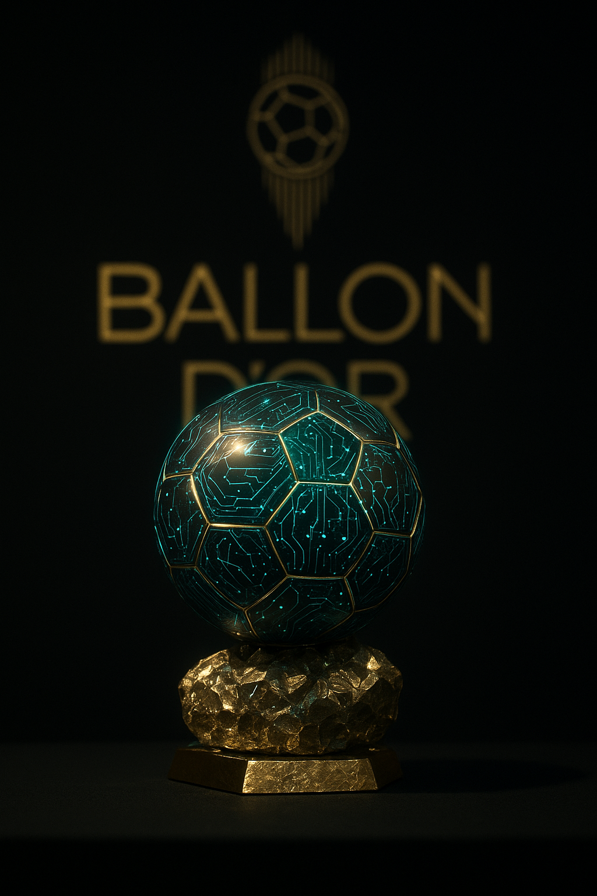
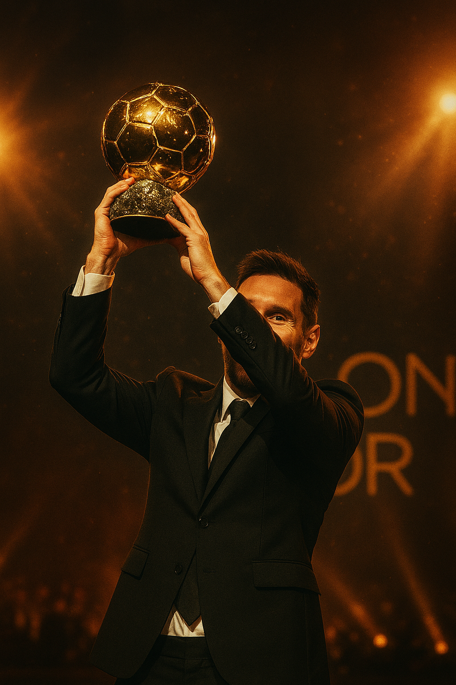

O Ballon d'Or é um dos prêmios mais prestigiados do futebol mundial.
Ele celebra o melhor jogador do mundo em cada temporada.
A cerimônia conta com grandes nomes do esporte, homenagens e muita emoção.

Melhores Momentos da Premiação

Este ano, a celebração contou com shows ao vivo, discursos emocionantes e
momentos históricos.
A noite foi marcada por união, talento e o reconhecimento de anos de dedicação ao esporte.
Como um jogador pode conquistar o Ballon d'Or
Para chegar ao topo e disputar o prêmio de melhor jogador do mundo, o atleta precisa se destacar em diversos aspectos do futebol profissional:
- Desempenho individual:
mostrar regularidade, técnica e impacto decisivo em jogos importantes. - Títulos coletivos:
conquistar campeonatos nacionais, continentais ou mundiais aumenta as chances. - Reconhecimento internacional:
ser referência em sua posição e admirado por torcedores e especialistas. - Fair play e liderança:
manter conduta exemplar dentro e fora de campo. - Consistência durante a temporada:
atuar em alto nível ao longo de todo o ano esportivo.